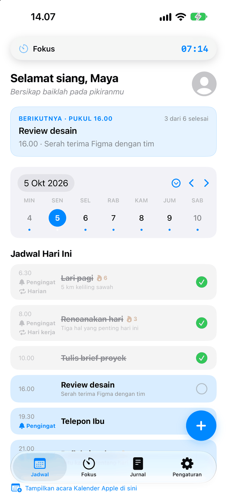
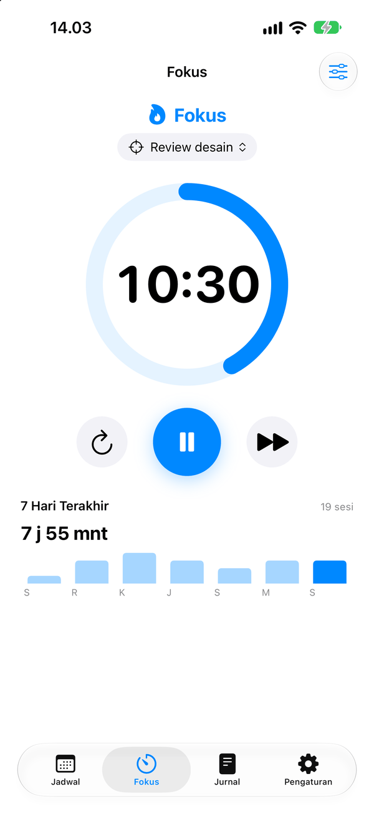
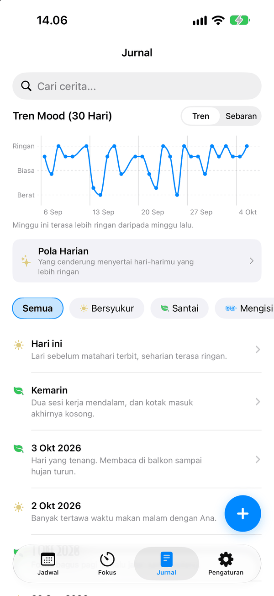

Harimu, fokusmu, dan jurnalmu dalam satu tempat.
C.A.L.M — Chronicle And Life Management — adalah perencana, timer fokus, dan jurnal yang bekerja bersama, untuk iPhone, iPad, dan Apple Watch.
- Gratis
- Tanpa akun
- Tanpa iklan
- Tanpa pelacakan
Segera hadir di App Store.



Harimu dalam satu tampilan
Agenda, pengingat, dan acara Kalender Apple tampil dalam satu daftar, dengan yang berikutnya selalu di paling atas. Rutinitas berulang lengkap dengan rentetannya.
Fokus yang terjaga
Timer fokus yang bisa dikaitkan ke agenda yang sedang kamu kerjakan. Hitung mundurnya tetap terlihat di Layar Kunci, Dynamic Island, dan pergelangan tanganmu.
Bagaimana minggumu sebenarnya
Tulis beberapa baris dan pilih mood-mu. Tren 30 hari dan Pola Harian menunjukkan apa yang cenderung menyertai hari-harimu yang lebih ringan.
Milikmu sendiri
Tidak ada akun dan tidak ada server. Semuanya tetap di perangkatmu — dan, hanya bila kamu menyalakan sinkronisasi iCloud, di iCloud pribadimu, yang tidak bisa dibaca C.A.L.M.
Juga tersedia
- Aplikasi Apple Watch untuk agenda hari ini, timer fokus, dan mencatat mood dalam satu ketukan.
- Widget Layar Utama dan Layar Kunci, tombol di Pusat Kontrol, dan pintasan Siri.
- Salinan opsional agenda dan pengingatmu di Kalender dan Pengingat Apple.
- Kunci jurnal dengan Face ID atau Touch ID, dan cadangan yang bisa diekspor kapan saja.
- Bahasa Indonesia dan Inggris.